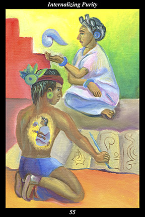

 | IMAGEAt the base of a pyramid, a male warrior records the oral tradition passed on to him by a female warrior. As he paints the teachings in a screen-fold manuscript, the spirit of the tradition becomes a living presence within him. |
INTERPRETATION
Where a pyramid symbolizes human creations that stand against time like nature’s own mountains, the pyramid’s base is a symbol of that part which is absolutely the last to be eroded away. The male warrior symbolizes the training and self-discipline required to subdue self-defeating attitudes and behavior. The oral tradition, represented by a blue speech glyph, symbolizes the living memory of a way of life that is in balance and in harmony with nature and spirit. The female warrior symbolizes the nourishing and compassion required to inspire dignity and benevolence. Just as a footprint in the sand is not the living person who passed along the shore, the teachings painted in the manuscript symbolize a static and limited view of a living way of life. The spirit of the tradition becoming a living presence within him symbolizes the permanent transformation of human nature required to live in balance and in harmony with nature and spirit. Taken together, these symbols mean that you fill your spirit so full of the living vision of light and liberty and loving-kindness that no opposing thought may enter.
ACTION
The masculine half of the spirit warrior upholds the feminine half of the spirit warrior within. In times when power is abused and the human spirit oppressed, it is essential to stand against the tide of corruption without getting corrupted. This requires an integration of wisdom and courage that provides resistance to an artificial way of life without being corrupted by contact with it. Only when we are inspired by a vision of the inherent purity and perfection of human nature can we live in the sphere of aggression and exploitation without being contaminated by the greed, ambition, anger, and fear it propagates. Likewise, it is only when we are inspired to revere all of nature and spirit that we can live in the sphere of destruction and desecration without being infected by the materialism and narcissism it propagates. Because you have the self-discipline to purify yourself of self-defeating attitudes and behavior, you are like a great boulder of gold that a stream of filth can neither taint nor move. Because you have the heartfelt openness to love and nourish all things equally, you are like a bottomless well of spring water that can neither be fouled nor exhausted. Bring the vision of a balanced and harmonious way of life into your heart, inscribe the vision of a pure face and a pure heart into the stone of your spirit, make the vision of light and liberty and loving-kindness into the pyramid of your lifework: this living purity you so adore in others and in nature is also within you—allow yourself to adore this spark of the divine within yourself and you are like a nurse in the midst of a plague, tending to the stricken without falling ill yourself.
INTENT
Even as others create a sphere of darkness, we create a sphere of light. Consider the need of both those who manufacture an artificial way of life and those who accept it as their own way of life: whether it is the former’s desire to control others or the latter’s desire to live in a controlled world, both suffer from a profound distrust of nature, humanity, and spirit. Observe the crippling effects of this need when it goes unchecked and unremedied. Attend to what the powerful are willing to take and what the powerless are willing to give up. Look at the world of darkness and despair they create out of this tragic need. Take refuge in the ancient way of life: establish balance and harmony with nature and spirit, form alliances with people of like mind, let your heart overflow with the
benefit of trust in all creation. Bring the light of purity into your heart and you are brought into the sphere of the purity of light.
SUMMARY
You are in too much of a hurry. You want to take action and get matters resolved quickly, becoming frustrated and overly-critical when things do not move at your pace. Where a stranger sees only an infant, a father sees a noble warrior. Where a layperson sees only rough glass, a diamond cutter sees a priceless jewel. Become blind to the impurities for now, see only the purity before you.
THE LINE CHANGES
1° A perceived threat is not the same as a real threat—you are in no danger unless you actually treat this as real and react in some way to it. Don’t get unnerved and try to solve a problem that does not exist. You’ve done this before—step back and smile at your excitability.
2° At a certain point, problems are only made worse by talking about them further—to save this partnership, quit opening the wound and let it heal. Use your anger and hurt to fuel your external undertakings. Hold firm to your dignity and long-range goals and this rift between you will close.
3° There are cycles of centralizing authority for increased control and decentralizing it for increased innovation—the transitions between these cycles are especially difficult to adjust to. Quit caring so much, this isn’t personal—you are too invested in this. Put your attention back on your home life.
4° There are those whose attitudes have contributed significantly to your exhaustion—now, as you move away from the past, is the time to let those relationships go all at once. This change offers a good rationale for breaking away. To continue these associations would demean you.
5° Sometimes it is an internal change, not an external one, that triggers disengagement—leaving what the heart no longer desires in order to engage in something higher holds great promise. Even at the height of success, stepping back onto the road of freedom cannot be wrong. Few will understand.
6° Absolute disengagement, as a way of life, frees you from the attachments and entanglements that so confound most people. Paradoxically, it allows you to be more engaged with life by freeing you from the desire to control the consequences of your actions. You live in a sea of circulating
benefit.